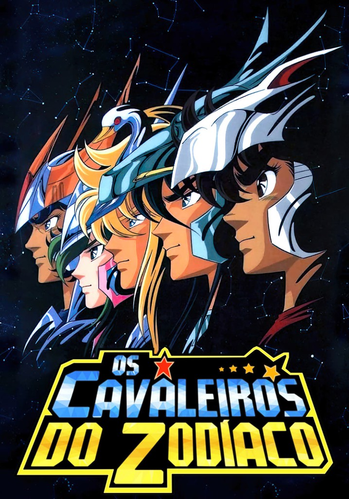

Bem-vindo ao Mundo dos Cavaleiros do Zodíaco: The Lost Canvas
Enredo
Saint Seiya: The Lost Canvas - Meiō Shinwa (em japonês: 聖闘士星矢セイントセイヤ THE LOST CANVAS 冥王神話; romaniz.: Seinto Seiya Za Rosuto Kyanbasu - Meiō Shinwa; lit. "Santo Seiya: A Tela Perdida - O Mito do Rei das Trevas"), no Brasil: Os Cavaleiros do Zodíaco: The Lost Canvas - A Saga de Hades, também conhecido simplesmente como The Lost Canvas, é uma série de mangá japonesa escrita e ilustrada por Shiori Teshirogi. É um spin-off baseado na série de mangá Os Cavaleiros do Zodíaco, que foi criada, escrita e ilustrada pelo autor japonês Masami Kurumada. The Lost Canvas foi publicado pela Akita Shoten na revista Weekly Shōnen Champion começando em 24 de agosto de 2006, e concluindo após 223 capítulos em 6 de abril de 2011, com vinte e cinco tankōbon lançados. Originalmente concebido como uma história em quadrinhos cujo objetivo era trabalhar simultaneamente com Saint Seiya: Next Dimension de Kurumada como uma interpretação multi-ângulo dos elementos compartilhados de seu enredo, que decorre de um evento mencionado no mangá Saint Seiya original de Kurumada; a abordagem foi rapidamente abandonada, pois ambos os trabalhos divergiram muito, e Next Dimension de Kurumada permaneceu como a narrativa canônica desses eventos, e The Lost Canvas como uma releitura alternativa separada.[carece de fontes] A história se passa no século 18, e se concentra em como um órfão conhecido como Tenma se torna um dos 88 guerreiros de Athena, conhecidos como Cavaleiros, e se encontra em uma guerra lutando contra seu melhor amigo Alone, que é revelado como a reencarnação do maior inimigo de Athena, o Deus Hades.
Em junho de 2009, a TMS Entertainment começou a adaptar o mangá no formato OVA, produzindo 26 episódios, que seguiram o material original de perto e ocasionalmente o expandiram. Teshirogi também começou a lançar uma série spin-off de The Lost Canvas dois meses após o término da serialização principal. Intitulada Saint Seiya: The Lost Canvas - Meiō Shinwa - Gaiden (聖闘士星矢セイントセイヤ The Lost Canvas 冥王神話 外伝 Seinto Seiya Za Rosuto Kyanbasu - Meiō Shinwa Gaiden?, lit. "Santo Seiya: A Tela Perdida - O Mito do Rei das Trevas - Anedotas"), o spin-off se concentra em contos relacionados a vários Cavaleiros antes dos eventos descritos na série principal.
Em 23 de abril de 2012, foi anunciado na revista Shōnen Champion que The Lost Canvas mudaria de uma publicação semanal para mensal em junho seguinte, e mudando para a revista recém-criada, Bessatsu Shōnen Champion da Akita, complementar a Shōnen Champion, retomando a publicação dos capítulos restantes de Anedotas nessa data.
Saga, por ser o cavaleiro da constelação de Gêmeos, é atormentado por suas duas faces, a face do bem e a do mal. Durante o período em que esteve como Mestre do Santuário, a face má dominou sobre a boa (na verdade de acordo com o mangá Saint Seiyan Origins, o lado mal de Saga era na verdade um lêmur, estrela maligna do infortúnio de Ker, que o possuiu). Com a ajuda do Cosmo de seus amigos, Seiya derrota Saga e usa o reflexo do sol no escudo da armadura de Athena para curar Saori. Em seguida, com a parte boa imperando sobre si, Saga comete suicídio como forma de auto punição.
Na segunda saga do mangá, o deus dos mares Poseidon reencarna no corpo de Julian Solo, com o objetivo de alagar a Terra. Saori vai ao seu templo na tentativa de resolver a situação de maneira diplomática, mas Julian a aprisiona. Seiya, Hyoga, Shun e Shiryu vão ao templo e enfrentam os Marinas, que são cavaleiros subordinados de Poseidon. Enquanto isso, Ikki descobre que o responsável por esta guerra é o irmão de Saga, Kanon de Gêmeos, que manipulou Julian. Durante a batalha final, o espírito de Julian desperta dentro de Poseidon, e assim os cavaleiros conseguem derrotar o deus dos mares. Salva pelos Cavaleiros, Saori guarda a alma de Poseidon em sua ânfora.
A saga seguinte do mangá mostra a ascensão de Hades, deus do submundo e o maior inimigo de Athena. Ele reencarna no corpo do cavaleiro Shun de Andrômeda, o mais puro dentre os cavaleiros, após se libertar de sua prisão (que havia sido imposta por Athena após ela ter vencido a última guerra entre ambos). Seu propósito era lançar a terra em trevas criando o chamado "Grande Eclipse", então revive os Cavaleiros de Ouro e o Grande Mestre Shion de Áries, oferecendo nova vida em troca de fidelidade, e os envia ao Santuário para matar Athena junto de seus espectros, que são cavaleiros fiéis a Hades.
Os Cavaleiros de Ouro que restam conseguem rechaçar o ataque, mas Saori entende que os cavaleiros do aceitaram a oferta de Hades para poder contar algo a ela e, assim que ela descobre o que é, comete suicídio enfiando uma adaga na sua garganta. Ela faz isso porque entende que precisa ter acesso ao submundo, para enfrentar Hades com a ajuda de seus Cavaleiros no domínio do próprio inimigo, uma vez que assim ela poderia ter acesso e destruir o corpo real de Hades.
Shion revela a intenção real dos Cavaleiros ressuscitados para os cavaleiros de bronze, e restaura suas armaduras com o sangue de Athena que havia ficado no local do suicídio. No submundo, os Cavaleiros de Bronze enfrentam mais Espectros de Hades e Pandora. Em Giudeca, a oitava e última das prisões do inferno, onde Hades costuma ficar, os cavaleiros de ouro se juntam com a alma dos cavaleiros de ouro já mortos e abrem o muro das lamentações para que os cavaleiros de bronze possam passar para os campos elísios, mas isto custa a vida de todos eles. Os cavaleiros de bronze conseguem atravessar o caminho até os campos elísios somente porque suas armaduras foram banhadas com o sangue de uma deusa. Apesar de Ikki não ter tido sua armadura banhada pelo sangue de Athena, atravessa o caminho até os campos elísios com a ajuda de Pandora. Nos campos elísios, os cavaleiros lutam contra o deus da morte, Thanatos, e o deus do sono, Hypnos, onde desenvolvem suas armaduras divinas. Na batalha final contra o deus da morte, os Cavaleiros, já com as Armaduras Divinas e juntamente com Saori, atacam Hades. Seiya sacrifica-se ao receber o ataque final de Hades que iria contra a deusa, que revida junto dos outros Saints e atinge o imperador do submundo.
Produção
Shiori Teshirogi conheceu Masami Kurumada em um evento público que ela visitou uma vez durante o tempo em que era uma nova autora de mangá. Nesse caso, Teshirogi enviou a Kurumada o primeiro mangá que ela fez, bem como uma carta que fez Kurumada pedir que ela escrevesse The Lost Canvas. Embora ela estivesse feliz com tal proposta devido ao fato de Saint Seiya sempre ter sido seu mangá favorito, ela encontrou problemas para escrevê-lo, pois costumava escrever shōjo e The Lost Canvas era para ser do gênero shōnen. Para fazer isso, Teshirogi teve que mudar várias coisas de seu estilo, como a narração e se acostumar a desenhar lutas. Antes do mangá começar, Kurumada enviou a Teshirogi uma versão geral da história do mangá, mas enquanto a série continuasse, ela começou a mudar algumas partes depois de discutir com pessoas da Akita Shoten. Além disso, os designs dos personagens e os panos foram baseados na segunda temporada da adaptação do anime Saint Seiya (conhecida como Asgard), mas ela os combinou com seu próprio estilo.[6] Quando Teshirogi recebeu a proposta para iniciar The Lost Canvas, ela foi informada de que a série duraria alguns volumes. No entanto, quando o décimo volume foi publicado, ela ficou surpresa com a duração da série, o que ela achou incrível.
Na produção da série, as emoções são o que Teshirogi mais presta atenção quando está desenhando, o que a faz refazer várias de suas ilustrações. Tanto em Saint Seiya quanto em Lost Canvas, seu personagem favorito é o Cavaleiro de Págaso, que se tornou aquele que ela mais gosta de desenhar.[6] Ao criar Tenma, o Cavaleiro de Pégaso de Lost Canvas, Teshirogi verificou se as palavras de Tenma seriam como as de Seiya, mas ela percebeu que ambos os personagens tinham personalidades diferentes.[8] Os Cavaleiros de Ouro de Câncer, Peixes e Touro foram desenvolvidos com a ideia de Teshirogi do que ela poderia fazer com os da série original. Quando ela recebeu comentários de que esses três Cavaleiro de Ouro de Lost Canvas são mais interessantes do que os da série original, ela respondeu que não pretendia dar a eles nenhum tratamento especial. Os nomes dos personagens são criados de acordo com suas origens e constelações, como Albafica de Peixes, cuja porção "Alba" de seu nome foi desenvolvida quando Teshirogi estava pensando em nomes de rosas.
Midias
Mangá
Os capítulos de Saint Seiya: The Lost Canvas, foram publicados pela Akita Shoten na revista Weekly Shonen Champion a partir 24 de agosto de 2006 e 7 de abril de 2011. O primeiro volume foi publicado em 12 de dezembro de 2006, e vinte e cinco tankōbon coletando o trabalho foram lançados.
Uma história curta composta de 40 páginas, ou gaiden, intitulada Saint Seiya: The Lost Canvas – Yuzuriha Gaiden - Chizumi no Mon (聖闘士星矢セイントセイヤ THE LOST CANVAS ユズリハ外伝 血墨の紋?), foi publicado em 16 de outubro de 2009, nas edições 11 e 12 da revista de quadrinhos Princess Gold da Akita Shōten, que é orientada para uma demografia de maioria feminina. A história se passa na mesma continuidade de Lost Canvas e explora ainda mais o passado e as motivações da personagem Yuzuriha e seu irmão mais novo Tokusa, bem como sua perspectiva dos eventos que cercam a ressurreição de Hades. Este episódio ainda não foi incluído em uma compilação tankōbon.
No capítulo final de The Lost Canvas, foi anunciada uma nova série Gaiden focalizando os Cavaleiros de Ouro, também de autoria de Shiori Teshirogi. Intitulado Saint Seiya: The Lost Canvas - Meiō Shinwa - Gaiden (聖闘士星矢セイントセイヤ THE LOST CANVAS 冥王神话 外伝 Seinto Seiya: Za Rosuto Kyanbasu - Meiō Shinwa - Gaiden?), teve seu primeiro capítulo publicado em 19 de maio de 2011.
No Brasil, The Lost Canvas começou a ser publicado pela Editora JBC em 13 de setembro de 2007 e foi finalizada com 25 volumes em 13 de fevereiro de 2012.[10] Em fevereiro de 2018, foi anunicado que a JBC relancaria os 25 volumes da série em uma edição especial. O primeiro volume foi lançado no Anime Friends em 6 de julho de 2018, e o último volume foi lançado em fevereiro de 2022. Os Cavaleiros do Zodiaco - The Lost Canvas Gaiden teve seu primeiro volume lançado em 25 de agosto de 2012 e seu último volume lançado em 24 de novembro de 2016.
Kurumada publicou no Champion Red, da Akita Shoten, uma série de capítulos especiais em profundidade de eventos do mangá; Saint Seiya: Episódio Zero, de 19 de dezembro de 2017, a 19 de fevereiro de 2018. Saint Seiya Origin, de 19 de dezembro de 2018 a 19 de janeiro de 2019; e Saint Seiya: Destiny, em 19 de dezembro de 2018. Os três capítulos do Episódio Zero foram incluídos no primeiro volume da edição shinsōban da série.
OVAs
Uma série de animação de vídeo original (OVAs) estreou no Japão em 24 de junho de 2009. A produção é da TMS Entertainment, enquanto Osamu Nabeshima é o diretor e Yoshiyuki Suga o escritor. A primeira temporada compreende treze OVAs, cada um com 30 minutos de duração. Todos os episódios OVA foram lançados em formato DVD e Blu-ray pela VAP. A primeira temporada terminou em 21 de abril de 2010, com o lançamento do décimo primeiro, décimo segundo e décimo terceiro episódios. A segunda temporada estreou em 23 de fevereiro de 2011, adicionando mais treze OVAs à série. A segunda temporada terminou em 20 de julho de 2011, com o lançamento dos OVAs 24, 25 e 26. Em janeiro de 2011, a Crunchyroll anunciou que iria transmitir a série nos Estados Unidos, Canadá, Reino Unido e Irlanda. O design original foi revelado na Tokyo International Anime Fair 2009. A Discotek Media licenciou a série OVA para um lançamento em DVD na América do Norte e estabeleceu uma data de lançamento preliminar para 24 de novembro de 2015, mas o lançamento foi adiado para 8 de dezembro de 2015. Em agosto de 2018, foi revelado que a VSI Los Angeles havia sido contratada pela Netflix para fazer uma dublagem em inglês para a série.
No Brasil, a série foi distribuída pela Sato Company e atribuída à DVD pela Flashstar e em streaming pelas plataformas Netflix, NetMovies, Vivo Play e Amazon Prime Video. A série foi transmitida na finada emissora de TV aberta Loading. Em Portugal, a série foi emitida pela SIC Radical sob o título de Saint Seiya: A Tela Perdida, no idioma japonês com legendas.
Atualmente, a TMS confirmou que não tem planos para retomar a produção da série OVA, deixando uma grande parte do mangá original não adaptado para animação
Recepção
Durante sua primeira semana, o volume 13 do mangá vendeu 25.238 cópias no Japão. Todos os volumes Gaiden de Lost Canvas não entraram no top 30 de mangás mais vendidos no Japão. Durante sua primeira semana, Lost Canvas Gaiden 2 vendeu 21.000 cópias no Japão e ficou em 30º lugar dos mangás mais vendidos em dezembro de 2011. Durante sua primeira semana, Lost Canvas Gaiden 8 vendeu 24.000 cópias no Japão e ficou em 44º lugar dos mangás mais vendidos em agosto de 2013. Durante sua primeira semana, Lost Canvas Gaiden 9 vendeu 19.100 cópias no Japão e ficou em 48º lugar dos mangás mais vendidos em dezembro de 2013. Durante sua primeira semana, Lost Canvas Gaiden 10 vendeu 22.000 cópias no Japão e ficou em 47º lugar dos mangás mais vendidos em junho de 2014
De acordo com um livreto que veio junto com o quinto volume de Anedotas, os vinte e cinco volumes de The Lost Canvas venderam cerca de 6,7 milhões de cópias apenas no Japão
A série de anime recebeu críticas geralmente positivas por críticos de anime. Foi elogiado por ser acessível a espectadores que não têm conhecimento do Saint Seiya original, apesar de ser uma prequela, e ao mesmo tempo permite que os fãs do original vejam os eventos de um ponto de vista diferente. Enquanto o uso de personagens foi notado como comum nas séries japonesas em geral, a entrega de vários deles, como o relacionamento de Tenma e Alone, foi notada como agradável. A animação foi notada por se destacar "lindamente" principalmente em lutas. Embora os ataques realizados pelo personagem tenham sido considerados involuntariamente engraçados pela UK Anime Network como resultado de seus nomes, a notável exibição de violência fez o crítico se perguntar se o programa deveria ser voltado para um público jovem.
Na entrevista com Nelson Akira Sato, presidente da distribuidora audiovisual Sato Company, distribuidora oficial de The Lost Canvas no Brasil, confirmou que o autor original, Masami Kurumada não renovou os direitos com a TMS Entertainment para continuar com a adaptação animada do mangá.
Outras Séries
"Os Cavaleiros do Zodíaco: Episode.G" é outro spin-off da série original "Os Cavaleiros do Zodíaco", criada por Masami Kurumada. Escrito e ilustrado por Megumu Okada, o mangá foi publicado entre 2002 e 2013.
"Os Cavaleiros do Zodíaco: Next Dimension" é um mangá escrito e ilustrado por Masami Kurumada, o criador original da série. Sendo uma continuação direta de sua obra original, "Os Cavaleiros do Zodíaco", a história de "Next Dimension" é ambientada após os eventos da série original e oferece uma nova visão do universo dos Cavaleiros.

"Os Cavaleiros do Zodíaco", também conhecido como "Saint Seiya", é uma série de anime e mangá criada por Masami Kurumada. A história gira em torno de jovens guerreiros chamados Cavaleiros, que juraram proteger a deusa grega Atena em suas batalhas contra as forças do mal. Cada Cavaleiro veste uma armadura baseada em uma constelação do zodíaco.